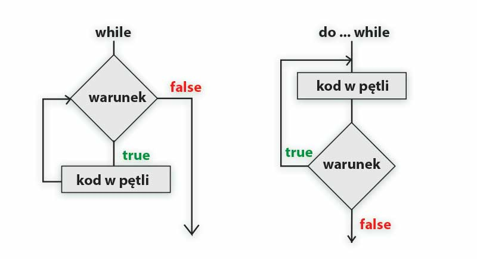

Pętla Do While
Konstrukcja
let i=0;
do {
document.write("Hello world!");
i++;
} while(i<=10);
Opis
Pętla do...while w JavaScript służy do wielokrotnego wykonywania bloku kodu,
ale z jedną ważną różnicą względem zwykłej pętli while:
